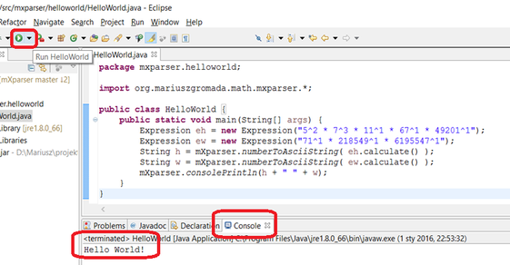

Adatbázisrendszerek
HTML 5 nyelv
Java programozás
Java programozás
A tárgy segít elmélyíteni az objektum orientált programozási ismereteket és Java technikákat mutatja be.
Tartalom:
Az OOP fogalmak átismétlése
Alapvetõ Java osztályok
A java.lang csomag osztályai
Gyûjtemény keretrendszer
Nemzetközi programozás (java.util)
I/O programozás
A java.net csomag használata
Egyéb Java csonmagok

@Minden jog fenntartva!